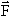
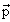
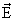

Получение радиоактивных пучков
нужной чистоты и интенсивности является сложной
задачей. В первую очередь это связано с тем, что
при взаимодействии первичного пучка с мишенью
образуется широкий спектр вторичных частиц.
Поэтому требуется разработка специальных
методов по выделению требуемого изотопа путем
создания высокоэффективных методов
"очистки" пучка и получения требуемого
энергетического разрешения.
Интенсивность пучка вторичных частиц N
определяется следующими величинами:
интенсивностью пучка первичных частиц I, выбором
ядерной реакции (сечением ), толщиной мишени d, эффективностью метода
сепарации :
N = Id |
(3.1) |
где через L обозначена светимость установки,
L = Id.
В последние годы достигнуты заметные
успехи в генерации пучков первичных частиц. Так в
реакторах возможно получение потоков нейтронов
~1014 нейтронов·см-2
·с-1. На протонных
ускорителях (Ep > 100 МэВ) пучки
достигают ~1015 c-1. Ускорители тяжелых
ионов дают пучки ~ 1013 c-1 в области
энергии (102 - 103) МэВ/нуклон.
Использование накопителей позволяет
существенно повысить выход реакции за счет
многократного прохождения ускоренного пучка
через мишень. В современных установках
светимость L составляет 1013, 1010 и 1010
барн-1·с-1
соответственно для релятивистских протонных
пучков, пучков тяжелых ионов промежуточных
энергий и реакторов на тепловых нейтронах.
Вторым важным фактором является
эффективность метода сепарации  . Она может меняться от 1
до 10-6 для различных установок.
. Она может меняться от 1
до 10-6 для различных установок.
Несмотря на то, что интенсивность
пучка вторичных частиц несомненно является
очень важной характеристикой, селективность в
сочетании с высокой эффективностью сепарации
часто определяет успех экспериментов с
радиоактивными ядрами.
 Рис. 3.1. Сравнение методов ISOL и IN-FLIGHT получения и сепарации вторичных пучков |
Используется два основных метода получения пучков радиоактивных ядер.
- Метод ISOL (Isotop Separation On Line). Этот метод основан на образовании ионов тепловых скоростей в твердой, жидкой или газовой среде; извлечении, разделении, ионизации и последующем ускорении их до энергий требуемых для эксперимента.
- Метод In-Flight (метод фрагментации ускоренных ионов на мишени). В этом методе для выделения представляющего интерес изотопа из большого числа изотопов, образующихся в результате реакций фрагментации, глубоконеупругих процессов или деления на лету в кулоновском поле используются различные комбинации электрического и магнитного полей и некоторые особенности взаимодействия быстрых частиц с веществом
Эти два метода взаимно дополняют
друг друга и могут быть использованы в
зависимости от конкретной физической задачи.
Сравнение методов ISOL и IN-FLIGHT показано
на рис. 3.1. Пучки радиоактивных
нейтроноизбыточных ядер, образующихся в реакции
деления, могут быть получены также с помощью
интенсивных источников нейтронов - ядерных
реакторов или ускоренных дейтронов.
В результате бомбардировки
ускоренным пучком толстой мишени в ней
образуются радиоактивные ядра в широком
диапазоне Z и A, которые остаются в веществе
мишени. Образовавшиеся ядра затем извлекают из
мишени. После извлечения из мишени ионы
разделяются с помощью масс-сепаратора и могут
быть использованы в прецизионных экспериментах
с низкими энергиями (10 - 500 кэВ) или ускорены во
втором ускорителе. Таким образом в методе ISOL
используются две ускорительные системы. Одна для
получения первичного пучка (Projectile Source) и создания
вторичных частиц в толстой мишени, вторая (Post
Accelerator) - для ускорения вторичных частиц. Второй
ускоритель обеспечивает необходимую для
физических исследований энергию пучка
радиоактивных ядер.
В методе ISOL генерируются пучки
вторичных частиц высокой интенсивности с
энергией до 25 Мэв/нуклон. Время извлечения
радиоактивных ядер из мишени, в которой они
образуются, и время их транспортировки к
ускорителю вторичных пучков, определяет
диапазон времен жизни экзотических ядер, которые
могут быть исследованы этим методом.
Метод In-Flight
Метод In-Flight оптимален для получения
вторичных пучков короткоживущих изотопов со
временем жизни от 100нс.
В этом методе пучки радиоактивных ядер
получаются в периферических столкновениях
тяжелой заряженной частицы с легким ядром мишени
и последующей сепарацией выделенных по Z и A
продуктов фрагментации. Первичный пучок имеет
энергию от 50 МэВ/нуклон до 1 Гэв/нуклон.
Радиоактивные осколки-фрагменты, образующиеся в
результате столкновений, летят преимущественно
вперед по направлению падающей частицы со
скоростями ~0.9 - 1.0 от скорости падающей частицы.
Несмотря на то, что для получения радиоактивных
пучков в этом методе используются тонкие мишени,
их интенсивность для короткоживущих изотопов
может превосходить интенсивность пучков,
полученных методом ISOL.
Использование накопительного кольца с
электронным охлаждением (Storage-Cooler Ring) позволяет
существенно повысить точность экспериментов.
 Рис. 3.2. Основные ступени, необходимые для сепарации продуктов ядерных реакций методом ISOL |
Ниже мы рассмотрим отдельные элементы приведенной на рис. 3.1 схемы.
Мишени в методе ISOL. Термин ISOL относится к
большой группе установок, на которых
радиоактивные ядра получаются в результате
ядерных реакций, останавливаются в мишени и
затем вторично ускоряются (рис. 3.2). Мишень
является одним из основных элементов этого
метода (рис. 3.3). Чаще всего это не традиционная
пассивная мишень, облучаемая пучком ускоренных
частиц, а целая химическаая лаборатория по
производству требуемого изотопа, которая часто
сочетается с ионным источником. Путем подбора
химического состава материала мишени и метода
извлечения образующегося изотопа уже на
начальном этапе достигается хорошая сепарация
изотопов. Основные преимущества метода ISOL -
возможность получения больших интенсивностей
экзотических пучков - достигается
использованием максимально возможных толщин
мишеней. Ограничения на толщину мишеней
накладываются длиной пробега первичных частиц в
мишени и необходимостью обеспечить быструю
диффузию из нее химических элементов, которые
предназначены для последующего исследования.
Мишени должны выдерживать большие тепловые
нагрузки. Так например, пучок протонов с энергией
30 МэВ и средней интенсивностью ~ 500 мкА выделяет в
мишени ~ 10 кВт. Поэтому в качестве мишеней
используются специальные многослойные
материалы, обеспечивающие необходимые параметры
для диффузии и десорбции из мишени образующихся
атомов экзотических ядер. Подбором
соответствующего материала и конструкции мишени
обеспечивают величину коэффициента выхода из
мишени  вых ~ 70 -
100%.
вых ~ 70 -
100%.
 Рис.3.3. Получение радиоактивных пучков в методе ISOL |
Мишень, используемая в методе ISOL, может
быть толстой, так что первичный пучок в ней
полностью останавливается, либо относительно
тонкой, при этом вторичные частицы вылетают из
мишени и затем захватываются либо в газовой
среде, либо в твердом поглотителе. Таким образом
на первом этапе происходит накопление вторичных
частиц в самой мишени или в каком-либо носителе.
На втором этапе происходит извлечение ядер для
их дальнейшего использования. Если в качестве
носителя используется газовая среда,
образующиеся ядра могут быть извлечены
практически сразу. Так в случае, когда в качестве
носителя используется гелий, образующиеся в
мишени ионы остаются ионизированными в течение
нескольких миллисекунд и извлечение их из
газовой среды не представляет особых проблем.
Для этого можно использовать постоянное
электрическое поле. В случае остановки ядер в
толстой мишени или твердом поглотителе время их
извлечения будет зависеть от химических свойств
извлекаемых ионов мишени (твердого
улавливателя). Решающими являются десорбционные
свойства мишени и поглотителя и их способность
выдерживать высокие температуры. Наиболее
трудно извлекать из мишени атомы благородных
газов. За последние годы развиты новые методы
извлечения атомов. В IGISOL (Ion-Guide Separation On-Line)
используют свойства газовых поглотителей для
быстрого извлечения радиоактивных ионов.
Например, используются различные реактивные
газы, в частности CF4. Трудности извлечения
отдельных элементов в методе ISOL являются в то же
время и преимуществом этого метода, так как
позволяют уже на этом этапе селектировать
различные химические элементы. Твердая мишень в
большинстве ISOL-установок одновременно является
ионным источником. Ионы могут извлекаться как
обычным нагревом, так и нагревом с помощью
электронного или лазерного пучка. Использование
лазеров позволяет дополнительно селектировать
ядра, накопленные в мишени или поглотителе.
Особые сложности возникают при экстракции
изотопов с коротким периодом полураспада.
Поэтому скорость извлечения радиоактивных ядер
является решающим фактором в повышении
интенсивности пучков радиоактивных ядер. После
того как ядра извлечены из мишени, начинается
следующий этап - дополнительная очистка от
примесей ненужных изотопов с помощью
масс-сепараторов. Для этого ионы ускоряются до
нескольких десятков - сотен кэВ. На современных
ISOL-установках разрешение по массам в
электромагнитных сепараторах -  M/M ~ 10-4. В отдельных случаях
эта величина может быть на порядок лучше. Путем
комбинации типа первичных частиц, выбора ядерной
реакции, мишени, ионного источника вторичных
частиц в методе ISOL можно подобрать подходящие
условия для получения вторичных пучков в широком
диапазоне A и Z. Одна из причин широкого
использования метода ISOL – возможность
последующего ускорения сепарированного пучка
экзотических частиц и изучения ядерных реакций
на таких пучках. Малоэнергетичные пучки частиц
на выходе электромагнитного сепаратора
используются для прецизионного измерения масс
атомных ядер.Для этого применяются различные
ионные ловушки. В частности ловушка Пеннинга
(Penning Trap) позволяет определять массы атомных ядер
с точностью ~ 10-7.
M/M ~ 10-4. В отдельных случаях
эта величина может быть на порядок лучше. Путем
комбинации типа первичных частиц, выбора ядерной
реакции, мишени, ионного источника вторичных
частиц в методе ISOL можно подобрать подходящие
условия для получения вторичных пучков в широком
диапазоне A и Z. Одна из причин широкого
использования метода ISOL – возможность
последующего ускорения сепарированного пучка
экзотических частиц и изучения ядерных реакций
на таких пучках. Малоэнергетичные пучки частиц
на выходе электромагнитного сепаратора
используются для прецизионного измерения масс
атомных ядер.Для этого применяются различные
ионные ловушки. В частности ловушка Пеннинга
(Penning Trap) позволяет определять массы атомных ядер
с точностью ~ 10-7.
Образующиеся в результате
фрагментации высокоэнергетичного первичного
пучка продукты реакций летят преимущественно по
направлению этого пучка. Телесный угол, в котором
можно собрать основную часть фрагментов,
составляет несколько миллистерадиан.
Относительный разброс по импульсу ~ 1%. В случае
реакций глубоконеупругих передач продукты
реакций почти всю кинетическую энергию получают
за счет кулоновского отталкивания между
конечными ядрами (Eкин осколков ~ 200 МэВ). В
этом случае релятивистские фрагменты
разлетаются внутри телесного угла ~ 40 мстрад и
имеют разброс импульсов  p/p ~ 10%. Разделение продуктов
реакций основано на их геометрии движения в
электрическом и магнитном полях. С помощью
соотношения
p/p ~ 10%. Разделение продуктов
реакций основано на их геометрии движения в
электрическом и магнитном полях. С помощью
соотношения
|
(3.2) |
где - сила,
действующая на ион, ,, q - импульс, скорость и заряд иона, , -
напряженности электрического и магнитного
полей, можно вычислить траекторию иона при
движении в электрическом и магнитном полях.
-
напряженности электрического и магнитного
полей, можно вычислить траекторию иона при
движении в электрическом и магнитном полях.
Если электрическое и магнитное поля
однородны, то электрическая E и магнитная B
жесткости определяются соотношениями
|
(3.3) |
Т.е. электрические и магнитные поля порознь позволяют разделить частицы в соответствии с их магнитной жесткостью
|
(3.4) |

Из соотношения (3.4) следует, что в магнитном поле фрагменты, имеющие одну и ту же скорость, разделяются в соответствии с их значениями A/q. Для высокоэнергетичных полностью ионизированных фрагментов, образующих вторичный пучок, разделение происходит пропорционально A/Z.
 Рис. 3.4. Схематическое изображение фрагмент-сепаратора с тремя методами разделения (магнитным, методом потерь энергии и электростатическим) |
Принципиальная схема
электромагнитного фрагмент-сепаратора (FRS)
показана на рис. 3.4 [Пенионжкевич Ю.Э. Физика
элементарных частиц и атомного ядра т.25. вып.4, 1994,
с.930]. Продукты, вылетающие из мишени,
расположенной в фокусе первого дипольного
магнита, с помощью щели F1, которая
находится в фокальной плоскости этого магнита,
разделяются в соответствии с их магнитной
жесткостью B. Вторая часть
спектрометра компенсирует дисперсию в первой
части и фокусирует ахроматический пучок в
фокальной плоскости спектрометра. Реальные
схемы построения фрагмент-сепараторов гораздо
сложнее и включают дополнительно системы
квадруполей и секступолей.
Динамика частиц в одной из таких
систем, состоящей из диполей и квадруполей,
показана на рис. 3.5.
 Рис. 3.5. Ахроматическая ионно-оптическая система, состоящая из двух дипольных магнитов и квадрупольных триплетов |
Для дополнительного анализа и разделения
фрагментов используется электростатический
фильтр Вина, представляющий собой комбинацию
электрического E и магнитного B полей. В случае
равенства сил FE = qE и FB = qvB
частицы, движущиеся со скоростью v = E/B, в
фильтре Вина не отклоняются.
В фрагмент-сепараторе FRS может быть
проведена дополнительная селекция фрагментов,
если в пространство между двумя диполями ввести
специальный поглотитель или заполнить
пространство между двумя диполями газом. При
движении иона в поглотителе происходит его
перезарядка. В результате образуется зарядовое
распределение ионов со средним зарядом <q>,
которое зависит от заряда иона Z и его скорости v
[H.Geissel, G.Munzenberg Ann. Rev. Nucl. Part. Sci. 45, 1995, с.163]
<q> = Z1/3(v/v0), |
(3.5) |
где v0 =2.18·106 м/с - скорость Бора. Подставляя (3.5) в соотношение (3.4) для магнитной жесткости B получаем, что отклонение в магнитном поле будет зависеть только от заряда иона Z и не будет зависеть от скорости частицы. Для частиц, прошедших поглотитель, условие прохождения через второй диполь изменится, т.к. частица, прошедшая через поглотитель, потеряет часть энергии dE:
dE/dx ~ AZ2/E или dE/dx ~ AZ2dпогл/E2, |
(3.6) |
где dпогл - длина поглотителя. На выходе первого диполя будем иметь энергию, определяемую соотношением
E ~ Z2/A. |
(3.7) |
Поэтому относительные потери энергии фрагментами определяются соотношением
dE/E ~ A3dпогл/Z2. |
(3.8) |
То есть такая система позволяет отбирать ядра с
одинаковыми значениями A3/Z2.
Комбинируя различные формы поглотителя между
диполями можно получить различные
пространственные и энергетические
распределения вторичных частиц в фокусе второго
диполя.
 Рис. 3.6. Пространственное разделение фрагментов, полученное методом B- |
На рис. 3.6 показаны возможности
комбинированного
B- E-B метода (метода поглотителя)
для разделения изотопов, образующихся в реакциях
фрагментации ядер 197Au, ускоренных до
энергии 1000 МэВ/нуклон. Показаны распределения
фрагментов в центральной части (верхняя часть
рисунка) и в фокальной плоскости второго диполя
(нижняя часть рисунка). Комбинируя размеры и
положение щелей перед поглотителем и на выходе
фрагмент-сепаратора, можно получить необходимое
разделение фрагментов. Дополнительные
возможности для разделения фрагментов можно
получить, если после фрагмент-сепараторов
использовать метод времени пролета или
накапливать частицы в накопительном кольце.
Накопительные кольца широко используются для
протонных, антипротонных, электронных и
позитронных пучков. Фактически накопительное
кольцо является ловушкой высокоэнергетичных
частиц. Электронное охлаждение позволяет
формировать в накопителях тяжелых заряженных
частиц интенсивные плотные пучки с малым
эмиттансом и малым разбросом частиц по импульсу.
Накопители, использующие метод электронного
охлаждения, кулеры, существенно расширили
возможности исследований с пучками
радиоактивных ядер. Стала возможной постановка
прецизионных экспериментов с малым разбросом
частиц по энергии (~10-6), разделение и
накопление долгоживущих изотопов и изомеров.
E-B метода (метода поглотителя)
для разделения изотопов, образующихся в реакциях
фрагментации ядер 197Au, ускоренных до
энергии 1000 МэВ/нуклон. Показаны распределения
фрагментов в центральной части (верхняя часть
рисунка) и в фокальной плоскости второго диполя
(нижняя часть рисунка). Комбинируя размеры и
положение щелей перед поглотителем и на выходе
фрагмент-сепаратора, можно получить необходимое
разделение фрагментов. Дополнительные
возможности для разделения фрагментов можно
получить, если после фрагмент-сепараторов
использовать метод времени пролета или
накапливать частицы в накопительном кольце.
Накопительные кольца широко используются для
протонных, антипротонных, электронных и
позитронных пучков. Фактически накопительное
кольцо является ловушкой высокоэнергетичных
частиц. Электронное охлаждение позволяет
формировать в накопителях тяжелых заряженных
частиц интенсивные плотные пучки с малым
эмиттансом и малым разбросом частиц по импульсу.
Накопители, использующие метод электронного
охлаждения, кулеры, существенно расширили
возможности исследований с пучками
радиоактивных ядер. Стала возможной постановка
прецизионных экспериментов с малым разбросом
частиц по энергии (~10-6), разделение и
накопление долгоживущих изотопов и изомеров.
Электронное охлаждение происходит в
результате кулоновского взаимодействия ионного
пучка с "холодным" электронным пучком. Для
этого в один из прямолинейных участков
накопителя ионов пропускается электронный пучок
с той же скоростью электронов как и у ионов.
Скорость охлаждения ионного пучка определяется
декрементом  ,
характеризующим скорость уменьшения элемента
,
характеризующим скорость уменьшения элемента  Г шестимерного фазового
объема
Г шестимерного фазового
объема
|
(3.9) |
Для электронного охлаждения ионного пучка
|
(3.10) |

где ne - средняя плотность электронного пучка, M, m - массы иона и электрона, e, i- угловые разбросы электронов и ионов, max, min - максимальный и минимальный прицельные параметры столкновения, v - скорость электронов (ионов).
Установившееся значение углового разброса в ионном пучке определяется соотношением
i = e(m/M)1/2. |
(3.11) |
Впервые электронное охлаждение было реализовано в 1974 году в экспериментах по охлаждению пучка протонов с энергией 68 МэВ на накопителе НАП-М в Новосибирске. Схема накопителя НАП-М приведена на рис.3.7.
 Рис. 3.7. Схема накопителя НАП-М: 1 - инжектор, 2 - канал инжекции, 3 - инфлектор, 4 - пикап-станция, 5 - квадрупольная линза, 6 - поворотный магнит, 7 - ускоряющий резонатор, 8 - дефлектор возбуждения бетатронных колебаний, 9 - кварцевая нить, пересекающая пучок, 10 - парамагнитная струя, 11 - сцинтилляционный счетчик регистрации рассеянных нитью протонов, 12 - установка электронного охлаждения, 13 - детектор нейтральных атомов водорода (двухкоординатная пропорциональная камера), 14 - геодезический знак |
Накопитель имеет 4 прямолинейных промежутка,
один из которых используется для сведения
электронного пучка с пучком охлаждаемых
протонов (рис. 3.8). Протоны, циркулирующие в
накопителе, многократно проходят участок
охлаждения, взаимодействуя каждый раз с новой
порцией электронов. Часто используется
рециркуляция электронного пучка. Охлаждение
самого электронного пучка происходит в
результате радиационного излучения. Для
охлаждения ионного пучка с энергией
100 - 400 МэВ/нуклон необходим пучок
электронов с энергией 50 - 200 кэВ и током
~ 1A. Характерное время охлаждения ионных
пучков обычно составляет от нескольких секунд до
минуты и позволяет существенно повысить
импульсное разрешение ионов в накопителе. Так
например, электронное охлаждение улучшает
импульсное разрешение  p/p
в накопителе ESR (Дармштадт, Германия) с 3·10-3 до 5·10-7.
p/p
в накопителе ESR (Дармштадт, Германия) с 3·10-3 до 5·10-7.
 Рис. 3.8. Схема установки ЭПОХА: 1 - электронная пушка, 2 - прямолинейные соленоиды, 3 - аноды электронной пушки, 4 - тороидальные соленойды, 5 - участок охлаждения, 6 - вакуумная камера, 7 - коллектор электронного пучка, 8 - вакуумные насосы, 9 - диполи коррекции траектории протонов, H0 - выход атомов водорода |
Много интересных деталей, связанных
с работой электромагнитных сепараторов, можно
найти в материалах конференции [Proc. 11th Int.
Conf. on Electromagnetic Isotope Separatprs and Techniques Related to their Applications.
Los Alamos. 1986. Nicl. Instr. Meth. B26, 1987, p.1-500].
В табл. 3.1 приведены сравнительные
характеристики фрагмент-сепараторов, работающих
в различных исследовательских центрах - LISE (GANIL,
Франция), FRS (GSI, ФРГ), A1200 (MSU, США), RIPS (RIKEN, Япония),
COMBAS (ОИЯИ, Дубна, Россия) [Yu. E. Penionzhkevich. Nucl. Phys
A616, 1997, p.247].
Таблица 3.1 Сравнительные характеристики некоторых фрагмент-сепараторов
| Фрагмент-сепаратор | Телесный угол, мср | Разрешение по импульсу |
Магнитная жесткость B, T·м |
Разрешение по массам m/ |
| LISE | 1.0 |
5.0 |
3.2 |
800 |
| FRS | 0.7 - 2.5 |
2.0 |
9 - 18 |
240 - 1500 |
| A1200 | 0.8 - 4.3 |
3.0 |
5.4 |
700 - 1500 |
| RIPS | 5.0 |
6.0 |
5.76 |
1500 |
| COMBAS | 6.4 |
20 |
4.5 |
4360 |
Перспективы дальнейшего развития метода In-Flight можно найти в материалах
- Acceleratory and storage rings for Next Generation fragmentation Facilities. NUPECC Working Group Nov 30-Dec 1998. G-1 I. Darmstadt.
- Targets and Fragment Separators for next Generation Fragmentation Facilities NUPECC Working Group Dec2-3 1998 G1 I Darmstadt.
Смотрите также
Nuclear Physics European Collaboration Committee (NUPECC)
European Isotope Separation On-Line Radioactive Nuclear Beam Facility (EUROISOL)